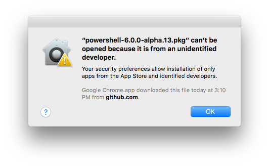
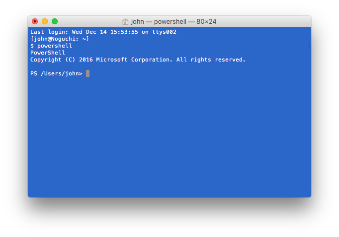
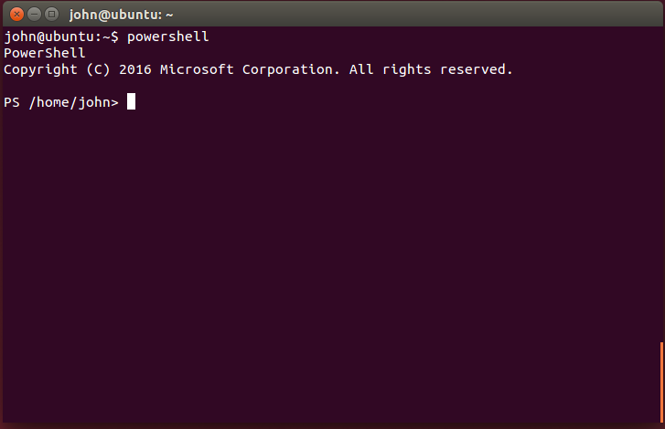
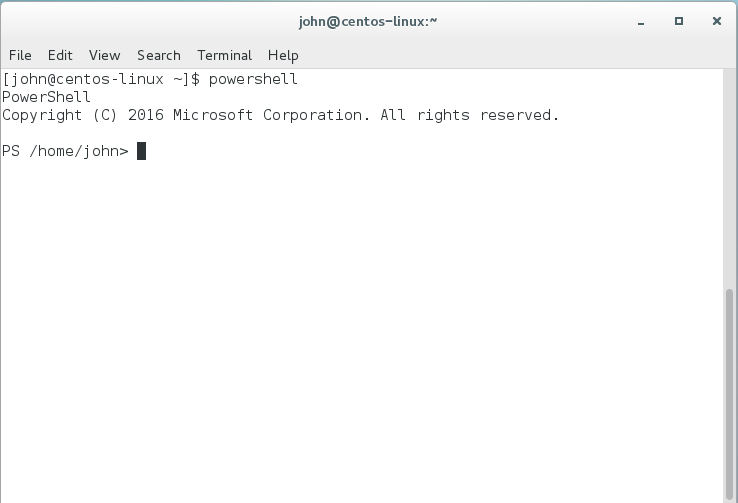
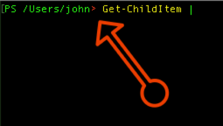

PowerShell for Linux and macOS
Overview
PowerShell has been available for Windows since 2006 and is a vital tool in the hands of software developers and sysadmins alike. In August 2016, Microsoft introduced PowerShell for Linux, macOS, and Windows as an open-source project on GitHub. Microsoft works closely with the community to refine and expand the product and to make sure that it works equally well on any operating system and with a variety of Linux distros. For more information about where to get it, the many learning resources that are available, and how to contribute, see the official announcement in the Windows PowerShell blog.
PowerShell is both a command-line environment and a scripting tool. One of the more remarkable aspects of its architecture is that PowerShell commands are object-based. You use commands to manipulate properties and methods on objects to achieve the result you want. Once you learn about the numerous objects available, formulating commands is a straightforward process that is not unlike manipulating objects in code.
In this lab, you will install PowerShell on the macOS or Linux and perform some exercises to familiarize yourself with PowerShell and learn about just a few of the many things it can do. Along the way, you will experience the "Zen of PowerShell" and build a foundation for further learning.
Objectives
In this hands-on lab, you will learn how to:
- Install and run PowerShell on Linux and macOS
- Get help with commands as you type
- Use PowerShell to work with and files and directories
- Use regular expressions in PowerShell searches
- Build pipelines to perform complex tasks
Prerequisites
The following are required to complete this hands-on lab:
- An Internet connection
- Sufficient permissions to install software on your Linux PC or Mac
- Ubuntu 14.04 or 16.04 or CentOS/Oracle/Red Hat 7 or higher (Linux users)
- macOS 10.11 or higher (Mac users)
Exercises
This hands-on lab includes the following exercises:
Estimated time to complete this lab: 45 minutes.
Exercise 1: Installing PowerShell on macOS
The first step in using PowerShell on a Mac is to download it and install it. Installation requires an Apple computer running macOS 10.11 (Yosemite) or higher. If you are using a Linux desktop operating system, please skip this exercise and go to Exercise 2 or Exercise 3.
-
Open a browser and navigate to https://github.com/PowerShell/PowerShell/releases. Then click Latest release.

Finding the latest release
-
Scroll down to the "Downloads" section for the latest release and click the .pkg file.

Downloading the macOS package
-
Because of App Sandbox protections in macOS, you cannot just double-click the package to install it. If you do, you will see the following message. This limitation will go away once PowerShell reaches beta because Microsoft will digitally sign the package.

-
To install the PowerShell package, open Finder and navigate to the "Downloads" directory. Control-click the downloaded .pkg file, select Open With, and in the flyout menu, select Installer (default).

Opening the downloaded package
-
A sandbox warning will appear, but this one will have an Open button. Click the Open button to start the installation. Then follow the prompts to complete the installation.

-
If you want to use PowerShell's networking functionality, you will also need to install OpenSSL. Apple deprecated OpenSSL in favor of their own libraries. The easiest way to install it is to install Homebrew and execute the following commands in a Terminal window. This is an optional step and is not required to complete this hands-on-lab.
brew install openssl
brew install curl --with-openssl
-
Once PowerShell is installed, open the Terminal application. Type powershell and press Enter to start PowerShell. If all went well during the installation, you will be placed at the PowerShell prompt. Note that the user name and prompt will probably be different on your computer.

Now skip to Exercise 4 to continue the lab. Exercises 2 and 3 are for Linux users only.
Exercise 2: Installing PowerShell on Ubuntu
At present, PowerShell supports Ubuntu 14.04 and 16.04. If you are running either version, follow the instructions in this exercise to install PowerShell on your Ubuntu desktop. If you are running CentOS/Oracle/Red Hat Linux instead, skip to Exercise 3.
-
Open a Terminal window and check the Ubuntu version number by executing the following command:
lsb_release -r
If the reported version number is anything other than 14.04 or 16.04, please update your Ubuntu installation to one of those versions.
-
Open a browser and navigate to https://github.com/PowerShell/PowerShell/releases. Then click Latest release.
Finding the latest release
-
Scroll down to the "Downloads" section for the latest release and click the .deb file that corresponds to your version of Ubuntu.

Downloading the Ubuntu package
-
In the Terminal window, navigate to the directory that the .deb file was downloaded to. (For Mozilla Firefox, the default download location is "~/Downloads." Other browsers may differ.) Then execute the following commands, replacing filename with the name of the .deb file you downloaded:
sudo dpkg -i filename
sudo apt-get install -f
The dpkg command may report an error, but that will be fixed by the apt-get command.
-
Once PowerShell is installed, type powershell and press Enter to start PowerShell. If all went well during the installation, you will be placed at the PowerShell prompt. Note that the user name and prompt will probably be different on your computer.

Running PowerShell
Now skip to Exercise 4 to continue the lab. Exercise 3 is for CentOS/Oracle/Red Hat Linux users only.
Exercise 3: Installing PowerShell on CentOS/Oracle/Red Hat Linux
Microsoft loves Linux, as does the PowerShell team. If you are running CentOS 7, Oracle Linux 7, or Red Hat Enterprise 7, follow the instructions in this exercise to install PowerShell.
-
Open a Terminal window and check the version number of your operating system by executing the following command:
cat /etc/*release*
If you don't see the version number 7.0 or higher in the listing, please update your operating system.
-
Open a browser and navigate to https://github.com/PowerShell/PowerShell/releases. Then click Latest release.
Finding the latest release
-
Scroll down to the "Downloads" section for the latest release and click the .rpm file.

Downloading the CentOS/Oracle Linux/Red Hat package
-
In the Terminal window, navigate to the directory that the .rpm file was downloaded to. (For Mozilla Firefox, the default download location is "~/Downloads." Other browsers may differ.) Then execute the following command, replacing filename with the name of the .rpm file you downloaded:
sudo yum install ./filename
-
Once PowerShell is installed, type powershell and press Enter to start PowerShell. If all went well during the installation, you will be placed at the PowerShell prompt. Note that the user name and prompt will probably be different on your computer.

Running PowerShell
Now proceed to Exercise 4 to learn about the PowerShell command line.
Exercise 4: Using the PowerShell Command Line
PowerShell offers an outstanding command-line editing experience. More than just a place to type commands, the command line is a place to discover commands and the parameters passed to them. In this exercise, you will learn about basic command-line features because they are a terrific aid not only when you're learning PowerShell, but when you're using it day to day.
-
Start PowerShell by opening a Terminal window and executing the following command:
powershell
-
PowerShell can help you complete commands — not just PowerShell commands (known as cmdlets), but also commands that launch other programs. A great example is the vi editor. At the PowerShell prompt, you can simply type vi to launch vi. Or you can ask PowerShell to list all valid commands that begin with "vi."
To demonstrate, type the following — the letters "vi" followed by two presses of the Tab key — at the PowerShell prompt:
vi<TAB><TAB>
You will see something like this:
PS /Users/john/Documents> vi
vi vifs vimdiff vipw visudo
view vim vimtutor vis
PS /Users/john/Documents> vi
vi still appears on the command line, so you can press Enter to launch it or continue typing. Or you can clear the command line by pressing CTRL+C.
-
If you are thinking that what you did in the previous step is exactly what Bash does, you are correct. Now let's try something a little more interesting. Type the following at the PowerShell command prompt:
Get-Chi<TAB><TAB>
After the second press of the Tab key, the command expands into Get-ChildItem, which is PowerShell's equivalent of the ls command.
-
It gets better. Add a space and a dash to the end of the command and press Tab twice:
Get-ChildItem -<TAB><TAB>
PowerShell responds by listing all possible parameters to Get-ChildItem:
Path Attributes WarningAction
LiteralPath Directory InformationAction
Filter File ErrorVariable
Include Hidden WarningVariable
Exclude ReadOnly InformationVariable
Recurse System OutVariable
Depth Verbose OutBuffer
Force Debug PipelineVariable
Name ErrorAction
Of course, if you typed -d followed by the Tab key, you would only see parameters that start with the letter D.
What is even more important is that any cmdlets you add to PowerShell, whether they're ones you wrote or ones written by others, benefit from full discoverability as well. It is just part of PowerShell.
-
Perhaps the most important feature of the PowerShell command line is that it lets you know when executing a command would result in an error. To see for yourself, type this at the PowerShell prompt, but do not press Enter:
Get-ChildItem |
This is an invalid command because it is missing the cmdlet to the right of the | operator. Look carefully at the > character in the prompt:

The fact that it's red means there is an error. This indicator is updated on each keystroke, so the moment the command becomes valid again, the red goes away.
The error indicator lights up when executing the command right now would result in a parsing error. It doesn't light up if the command is simply wrong or doesn't exist.
All of these features are part of the default command-line editing experience, but that experience is extensible. You can add modules to PowerShell to add syntax highlighting and other features. One such module is PSReadLine, which was originally developed for Windows PowerShell and is now available for macOS and Linux, too.
Exercise 5: Listing and Copying Files
Get-ChildItem is an example of a PowerShell cmdlet (pronounced "command-let"). It is one of hundreds of cmdlets that are included in PowerShell, and since you can write cmdlets of your own, there is no end to the number of commands you can execute at the PowerShell prompt. In this exercise, you will learn more about Get-ChildItem and other cmdlets for working with files. You will also learn about pipelines, which enable you to string cmdlets together to perform complex tasks.
-
You really only need to memorize three PowerShell cmdlets: Get-Command, Get-Help, and Get-Member. With these cmdlets, you can get all the information you need about other cmdlets. PowerShell follows a verb-noun approach to naming, which you can read about in Approved Verbs for Windows PowerShell Commands. Accordingly, you will see that Get is the verb to "specify an action that retrieves a resource."
At the PowerShell prompt, execute the following command to display the parameters to Get-Command:
Get-Command -<TAB><TAB>
You will see a list of possible parameters:
Name Syntax Verbose
InformationVariable Verb ShowCommandInfo
Debug OutVariable Noun
ArgumentList ErrorAction OutBuffer
Module All WarningAction
PipelineVariable FullyQualifiedModule ListImported
InformationAction CommandType ParameterName
ErrorVariable TotalCount ParameterType
WarningVariable
Tucked away in the middle of the list is Verb. This is the one you use to find all the cmdlets that start with a specific verb. Use the following command to list all cmdlets that begin with Get:
Get-Command -Verb Get
The list is long. There is even a Get-Verb cmdlet that lists all of the verbs you can use.
-
Of all the Get cmdlets, the two that you will focus on for now are Get-Item and Get-ChildItem. These are the primary cmdlets PowerShell users use to list files and directories and the contents of directories. What is the difference between the two? Execute the following two commands and read the output carefully:
Get-Help Get-Item
Get-Help Get-ChildItem
Both cmdlets "get" files and folders. The main difference is that Get-Item retrieves a single item, whereas Get-ChildItem returns all the files and folders in the specified path. To list the contents of a directory, Get-ChildItem is the cmdlet you want to use.
-
Viewing help information in a Terminal window is great for getting a quick read on what a cmdlet does, but when you want to dig deeper, you can go online by including -online in the command. To demonstrate, type the following command:
Get-Help Get-ChildItem -online
If you are using Mozilla Firefox on CentOS or Ubuntu, you may see some extranious output in the Terminal window if Firefox wasn't already running.
-
Assuming you downloaded this lab as a zip file and expanded it to a local directory on your hard disk, use a cd command to navigate to the directory containing this lab (the directory containing the MD or HTML file you are reading). Then execute the following command to list the files and directories in the current directory:
Get-ChildItem
The output should include a subdirectory named "resources." Use the following command to view the contents of the "resources" directory:
Get-ChildItem ./resources/ -Recurse
You should find that the subdirectory contains 24 text files with names such as a.txt and b.txt.
-
Now execute the following command to list all the cmdlets that begin with Copy:
Get-Command -Verb Copy
If you wanted to copy a file, which cmdlet do you think you might use? If you guessed Copy-Item, you are correct. This is such an important cmdlet, you should browse the examples in the online help:
Get-Help Copy-Item -Online
-
Example 2 in the online help shows how to copy the contents of a directory to another directory, which you will do in a moment. Before you jump feet-first into doing a Copy-Item, however, it might help to understand precisely what the command will do.
Enter PowerShell's most powerful parameter: -WhatIf. This parameter can save your job — especially if you're about to delete a bunch of files or recursively delete a bunch of directories. To demonstrate, type the following command to preview what the Copy-Item command will do when passed a specific set of parameters:
Copy-Item ./resources/ ./workspace -Recurse -WhatIf
In this case, Copy-Item will copy the contents of the "resources" subdirectory to the "workspace" directory.
-
A good habit to get into with PowerShell is to be explicit with parameters so the results of a command don't depend on parameter order. To copy the files in the "resources" directory to the "workspace" directory (don't worry; the "workspace" directory will be created for you if it doesn't already exist), execute the following command and notice the explicit parameter usage:
Copy-Item -Path ./resources/ -Destination ./workspace -Recurse
-
Now that the files have been copied, change to the "workspace" directory with the following command:
cd workspace
-
Now that you know the basics of listing (and copying) files and directories, it is time to learn about the PowerShell pipeline. The first thing to realize is that you can use the piping operator | to "pipe" the output from one cmdlet to the input to another. The second thing to know is that in PowerShell, everything is an object. Even cmdlets return objects. Take this command, for example:
Get-ChildItem | Get-Member
The results show that the object returned by Get-ChildItem is an object of type System.IO.FileInfo. Furthermore, it lists the methods and properties available on that object. The list is a little hard to read because the methods and properties aren't listed in alphabetical order. You can fix that by piping the output from Get-Member to the Sort-Object cmdlet and specifying a property name. The following command sorts the values returned by Get-Member on the Name property:
Get-ChildItem | Get-Member | Sort-Object Name
-
Notice that the alphabetized list contains a property named FullName. As you might suspect, this property returns the full name (path plus file name) of a file-system object. Suppose you wanted to list each file in the current directory using full names. You can use ForEach-Object to iterate over the files and display each file's FullName property. Demonstrate by executing the following command at the PowerShell prompt:
Get-ChildItem | ForEach-Object FullName
The command you just executed uses the newer format for ForEach-Object where you simply specify the property name. The old format, which is used by many of the examples found on the Internet and will always be supported (and can still be handy at times), looks like this:
Get-ChildItem | ForEach-Object {$_.FullName}
In a ForEach-Object loop, $_ represents the object that is currently being iterated over.
-
The next task is to sort the list of files by their sizes, but in reverse order. One of the many properties present in System.IO.FileInfo objects is the Length property. What is the output when you execute the following command?
Get-ChildItem | Sort-Object Length
The default sort order is ascending, but check out the online help for Sort-Object to see if there might be a parameter for sorting in descending order:
Get-Help Sort-Object
-
Did you find the appropriate parameter? Use the following pipelined command to see the results:
Get-ChildItem | Sort-Object Length -Descending
-
The final task in this exercise is to list only the files that are between 800 and 1024 bytes in length (exclusive). Here, PowerShell's Where-Object cmdlet will come in handy, because it accepts a conditional expression. The conditional expression can use comparison operators such as -lt (less than), -gt (greater than), and -and. Here is the command that lists files of a certain size:
Get-ChildItem | Where-Object {($_.Length -gt 800) -and ($_.Length -lt 1024)}
Run the command and the output should look like this:
Mode LastWriteTime Length Name
---- ------------- ------ ----
-a---- 12/23/2016 9:36 AM 860 a.txt
-a---- 12/23/2016 9:36 AM 835 f.txt
-a---- 12/23/2016 9:36 AM 1003 i.txt
-a---- 12/23/2016 9:36 AM 946 t.txt
-a---- 12/23/2016 9:36 AM 815 y.txt
-a---- 12/23/2016 9:36 AM 863 z.txt
Constructing pipelines by using the piping operator to pipe output from one cmdlet to another, and using conditional expressions in those pipelines, is just one of the tools used by PowerShell users to accomplish file-system tasks. Of course, these concepts don't apply just to cmdlets that operate on the file system. They apply to all cmdlets, even custom ones used to extend PowerShell.
Exercise 6: Working with the Contents of Files
It is time to take your PowerShell knowledge up a notch. In this exercise, you will learn how to work with the contents of files and how to find specific data in those files. You will also learn how to glean some interesting statistics from what you find. Be warned that you will be executing some complicated "one liners." That is PowerShell-speak for accomplishing a lot with a little and not having to write an app to do the work.
-
You already know how to list files; now you need to know how look inside files. Because you will be working with text files in the "resources" directory included with this lab, you need to find cmdlets that can work with strings. Execute the following command and see if there is a cmdlet that might help:
Get-Command *string*
The Get-Command cmdlet happily accepts wildcards, so the results include all cmdlets with "string" in the name. One of those is Select-String. Pull up help for Select-String with the following command:
Get-Help Select-String -Online
Read carefully through the help to learn what the Select-String cmdlet can do.
-
Suppose you wanted to list all the lines containing "we" in the files in the current directory. The online help for Select-String reveals that it supports two parameters related to pattern matching: -SimpleMatch for basic string matching, and -Pattern for regular-expression matching. Execute the following command to demonstrate -SimpleMatch:
Get-ChildItem | Select-String -SimpleMatch "we"
That yields dozens of matches. Look through the output and see how many "we" strings you matched.
-
The previous command listed lines containing "we", but it also listed lines containing "were," "wealthy," and "weather," among others. Suppose you only wanted to find lines containing the word "we." One solution might be to search for "we " ("we" with a space at the end). Execute the following command to see how well that works:
Get-ChildItem | Select-String -SimpleMatch "we "
This seems like a reasonable solution, but is it? What might you be missing here? Think about that for a moment.
-
The previous command finds occurrences of "we" with a trailing space. But what happens if a line ends with "we" followed by a line break? What you should be searching for is "we" preceeded by either the start of the line or whitespace, or "we" followed by either the end of the line or whitespace. That screams regular expressions. What is the old joke about regular expressions? "You have a problem and you solve it with a regular expression. Now you have two problems!"
Under the hood, PowerShell uses the .NET regular expression library. Here is the Regular Expression Quick Reference, which is very helpful when working with regular expressions in PowerShell.
For this step, the regular expression you want to use is (^|\s)we($|\s). You can read this as "(beginline or whitespace)we(endline or whitespace)." Execute the following command at the PowerShell prompt:
Get-ChildItem | Select-String -Pattern "(^|\s)we($|\s)"
If you compare the output of the last two commands, you will see that the latter found one more line than the former.
-
What if the goal was to count the number of times the word "we" appears in these text files? You could manually count the lines, but why not let PowerShell count them for you? All you need is a cmdlet to do the counting. Start by executing the following command to list all the verbs that you can use in a PowerShell command:
Get-Verb
Scroll down the list and pay attention to the "Diagnostic" group:
Verb Group
---- -----
Debug Diagnostic
Measure Diagnostic
Ping Diagnostic
Repair Diagnostic
Resolve Diagnostic
Test Diagnostic
Trace Diagnostic
The verb Measure looks promising. Now list the cmdlets that start with Measure with the following command:
Get-Command -Verb Measure
The output reveals two cmdlets — Measure-Command and Measure-Object — that look interesting. Use the following command to view the online help for the latter:
Get-Help Measure-Object -Online
-
Now try piping the output from Select-String to Measure-Object:
Get-ChildItem | Select-String -Pattern "(^|\s)we($|\s)" | Measure-Object
The text includes a count, but it also includes a sum, an average, and other values that aren't relevant in this scenario:
Count : 6
Average :
Sum :
Maximum :
Minimum :
Property :
-
Execute the following command, which uses Select-Object to filter out unwanted information:
Get-ChildItem | Select-String -Pattern "(^|\s)we($|\s)" | Measure-Object | Select-Object Count
Now the output tells you exactly what you wanted to know: how many times the word "we" appears in the text of the files that you searched.
-
Measure-Object is an extremely useful cmdlet. For example, to compute the total size of a set of files and to show the average length along with minimum and maximum lengths, you could do the following:
Get-ChildItem | Measure-Object -Property Length -Average -Sum -Maximum -Minimum
Try it and see. Pretty cool, huh?
-
How about a more complex example that really demonstrates the power of PowerShell? Suppose you want to replace all occurrences of "we" in the files with "nous," which is French for "we." Rather than write an app to do it, you can do it with PowerShell.
A variable in PowerShell is represented as a dollar sign followed by the variable name. Some variables, such as $PSVersionTable, are built into PowerShell already. Execute the following command to see the value of that variable:
$PSVersionTable
This is a useful variable because it reveals which version of PowerShell you are running.
-
Now try the following command:
Get-ChildItem |
ForEach-Object {
$content = ($_ | Get-Content)
$content = $content -replace "(^|\s)we($|\s)"," nous "
$content | Set-Content $_.FullName
}
This one-liner (it's technically just one command) gets the files in the current directory and pipes them to ForEach-Object. Inside the curly braces is a script block, where you can do pretty much anything you want. The first line reads the current file and writes its contents to the variable named $content. The second line does a search-and-replace on the value stored in the $content variable and assigns the result back to $content. The third line pipes the value of the $content variable to the Set-Content cmdlet, which writes the content to the current file, thus overwriting the original content.
That is an amazing amount of work for a single command! You might be wondering why the replacement text is " nous " (notice the surrounding spaces) rather than "nous." That's because the regular expression matches the whitespace on both sides of "we," so if you don't put spaces around "nous," you will lose them.
-
To verify the replacement worked as intended, execute the following command:
Get-ChildItem | Select-String "nous"
-
If you want to delete the "workspace" directory, use the following commands:
cd ..
Remove-Item ./workspace/ -Recurse -Force
This exercise covered a lot of ground. You learned how to search files for text using simple matches and regular expressions, and how to measure the number of items returned by a cmdlet. You also saw a one-liner that performs a search-and-replace. Use these as a starting point for further exploration.
Summary
In this hands-on lab, you learned how to:
- Install and run PowerShell on Linux and macOS
- Get help with commands as you type
- Use PowerShell to work with and files and directories
- Use regular expressions in PowerShell searches
- Build pipelines to perform complex tasks
A recommended next step is to take time to read the PowerShell documentation at https://msdn.microsoft.com/en-us/powershell/scripting/powershell-scripting. You might also find A Task-Based Guide to Windows PowerShell Cmdlets helpful as a way to get to know your way around some of the cmdlets. Ultimately, the more you work with PowerShell, the more intutive it will feel and the more productive you will be with it. And now that dictum applies to Linux and macOS users as well as Windows users!
Copyright 2016 Microsoft Corporation. All rights reserved. Except where otherwise noted, these materials are licensed under the terms of the MIT License. You may use them according to the license as is most appropriate for your project. The terms of this license can be found at https://opensource.org/licenses/MIT.